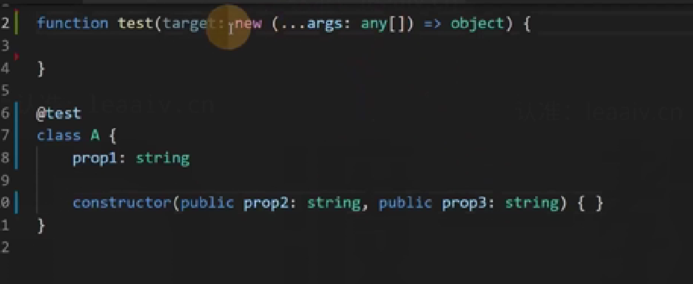
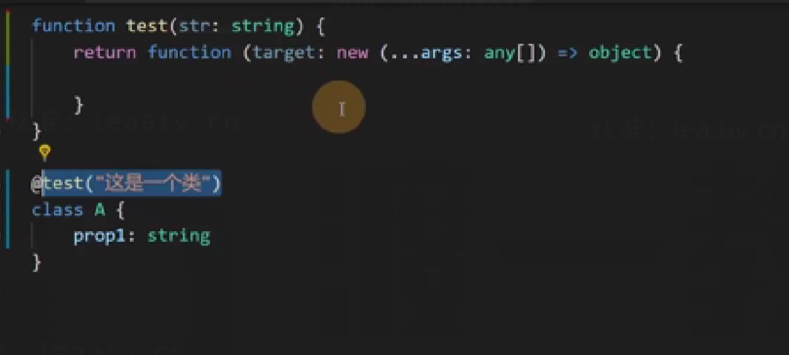
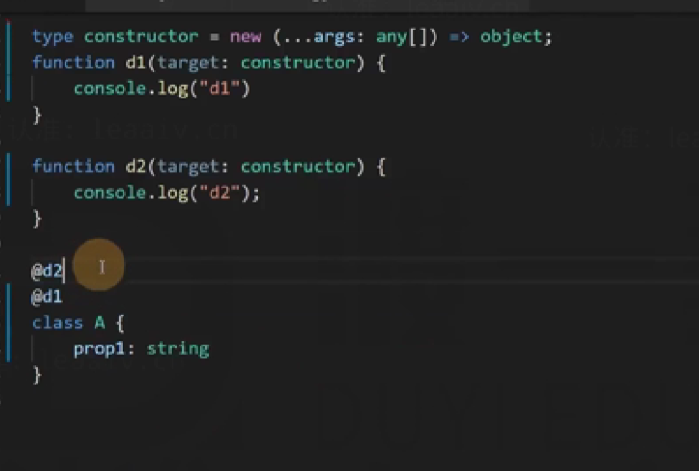
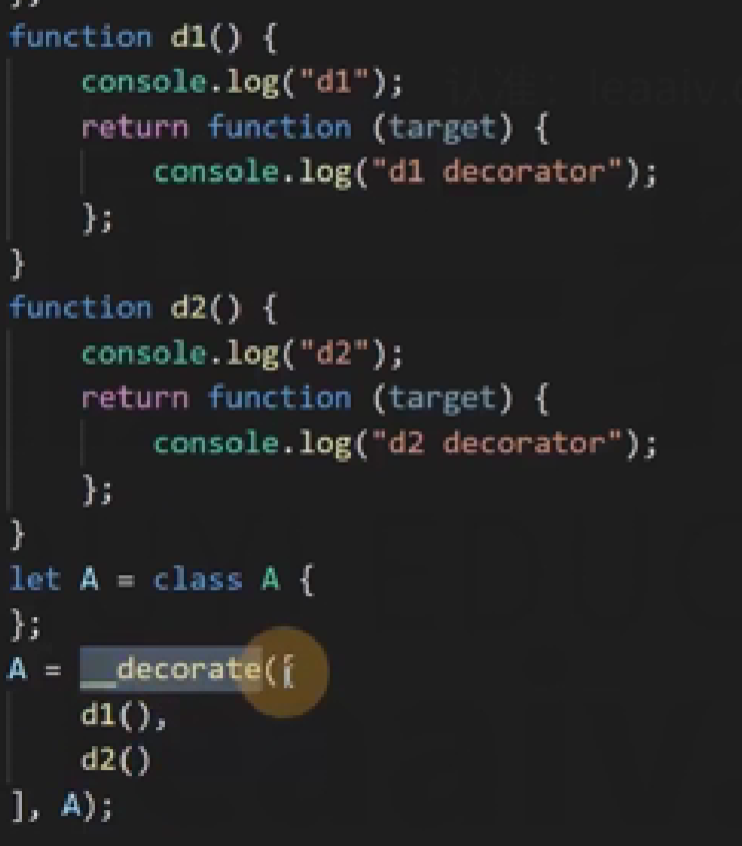
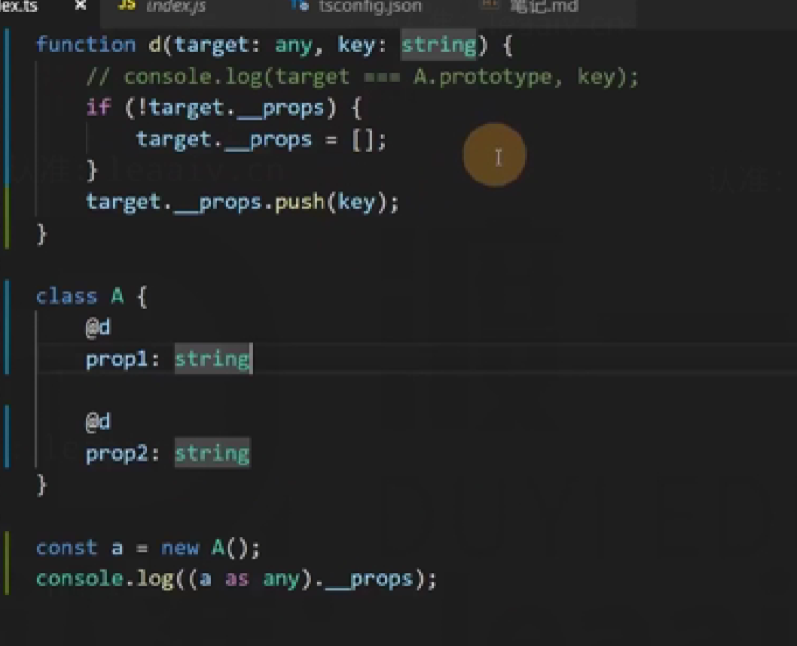
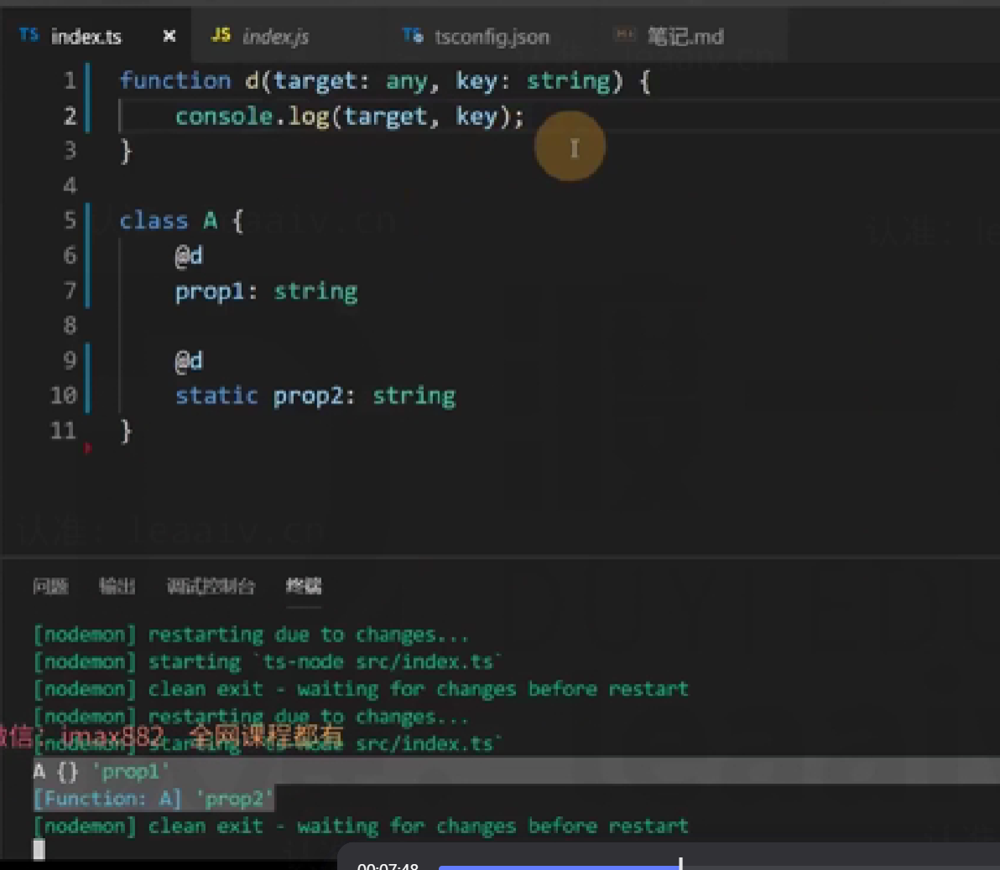
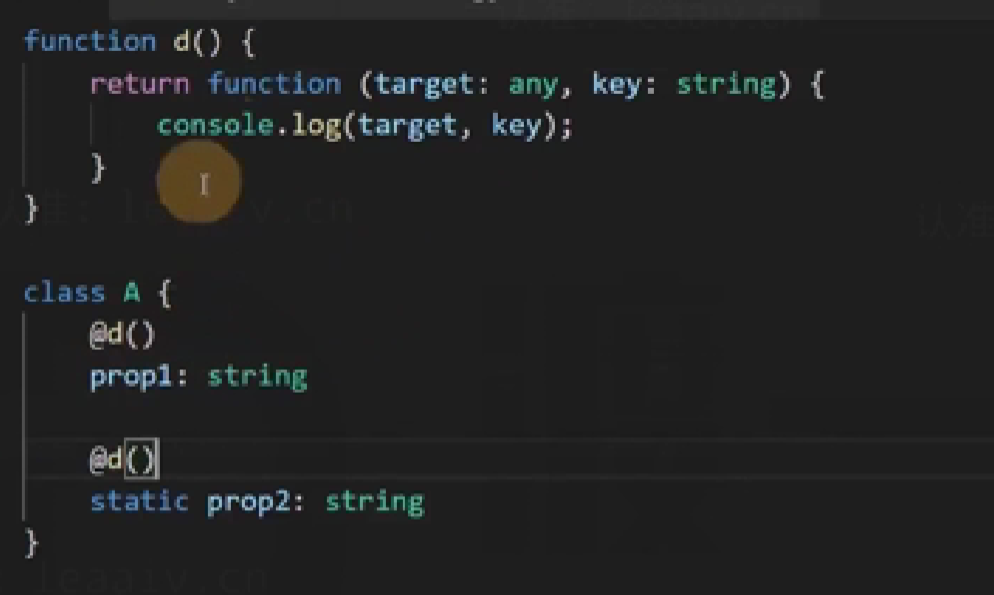
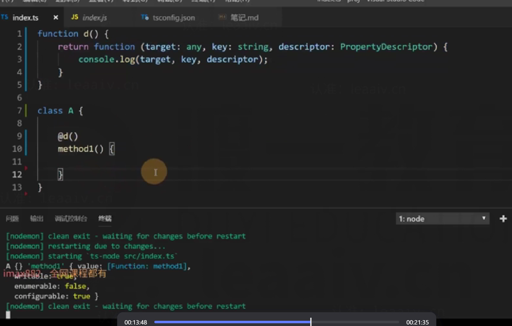
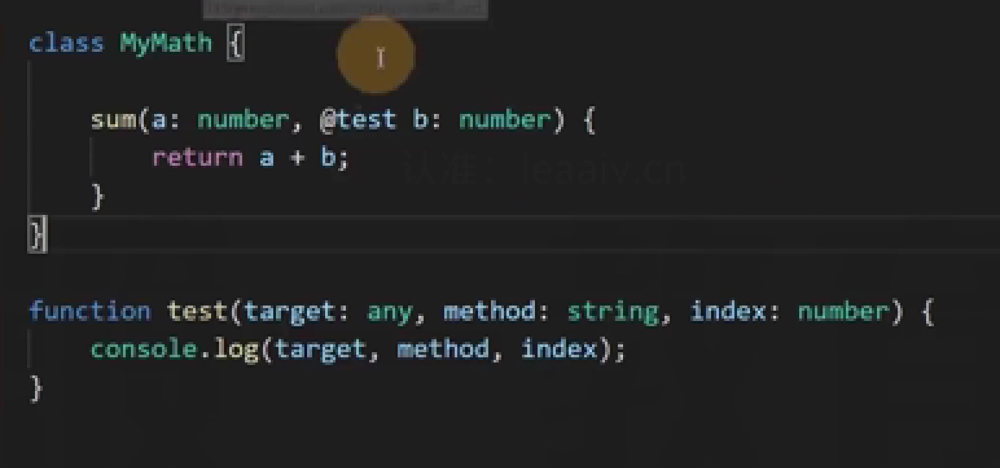
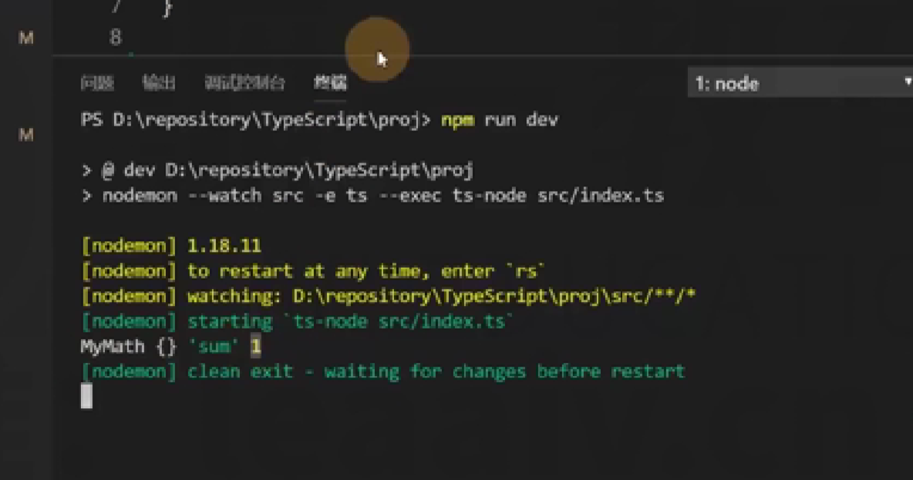

解决的问题
装饰器，能够带来额外的信息量，可以达到分离关注点的目的。
- 信息书写位置的问题
- 重复代码的问题
上述两个问题产生的根源：某些信息，在定义时，能够附加的信息量有限。
装饰器的作用：为某些属性、类、参数、方法提供元数据信息(metadata)
装饰器的本质
在 JS 中，装饰器是一个函数。（装饰器是要参与运行的）
装饰器可以修饰：
- 类
- 成员（属性+方法）
- 参数
类装饰器
类装饰器的本质是一个函数，该函数接收一个参数，表示类本身（构造函数本身）
在 TS 中要使用装饰器，需要开启experimentalDecorators
使用装饰器@得到一个函数
@后面的东西一定要是一个函数，而且函数的格式需要符合要求
在 TS 中，如何约束一个变量为类
- Function
new (参数)=>object
装饰器函数的运行时间：在类定义后直接运行
装饰器写法(test 是这个装饰器函数)
function test(target: new () => object) {
console.log(target);
}
@test
class A {}
类装饰器可以具有的返回值：
1.void：仅运行函数
2.返回一个新的类：会将新的类替换掉装饰目标
function test(target: new () => object) {
return class B {};
}
@test
class A {}
let a = new B();
这里的a将得到一个B构造函数的实例对象;
构造函数带参数的写法
通过..args 可以将构造函数的参数传进来

如果采用函数调用的方法，就必须要做到函数的返回结果要满足装饰器函数的要求(装饰器工厂)
一个要给@语法一个符合要求的装饰器函数

多个装饰器的情况：会按照后加入先调用的顺序进行调用。

输出 d1,d2(装饰器函数内向外调用)
装饰器工厂调用顺序

在运行装饰器函数之前 d1 与 d2 就已经执行完了
先运行 d1 函数与 d2 函数得到两个装饰器，然后两个装饰器从内向外调用
输出 d1,d2(装饰器函数内向外调用，装饰器工厂函数从外向内调用)

函数的调用是在运行装饰器之前的
成员装饰器
- 属性
属性装饰器也是一个函数，该函数需要两个参数：
- 如果是静态属性，则为类本身；如果是实例属性，则为类的原型；
- 固定为一个字符串，表示属性名
如果是实例属性，则为类的原型(A 的原型)

由于 prop2 是静态属性，则拿到 A 本身

装饰器工厂

- 方法
方法装饰器也是一个函数，该函数需要三个参数：
- 如果是静态方法，则为类本身；如果是实例方法，则为类的原型；
- 固定为一个字符串，表示方法名
- 属性描述对象
方法可以当作属性来对待，但是也可以写第三个参数属性描述对象

可以有多个装饰器修饰
参数装饰器
要求函数有三个参数：
- 如果方法是静态的，则为类本身；如果方法是实例方法，则为类的原型
- 方法名称
- 在参数列表中的索引


类的原型是什么？
function Person(name, age) {
this.name = name;
this.age = age;
}
// Person 的 prototype 属性
console.log(Person.prototype); // 输出：{ constructor: Person }
Person.prototype 就是类的原型